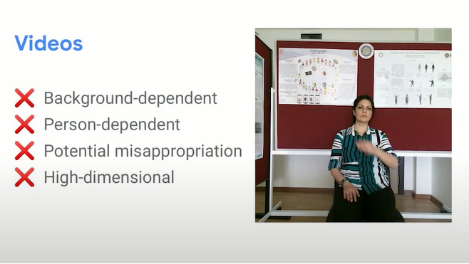
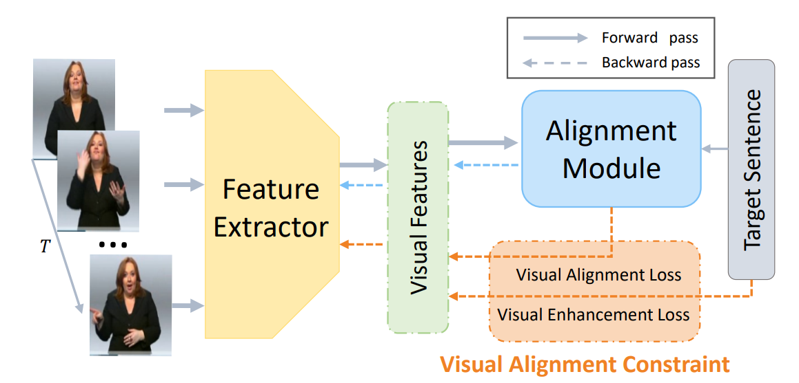

Procesamiento del Lenguaje de Signos Fundamentos, tecnologías y retos actuales
Claudio B. Apellido, J. Antonio Apellido, Julián M. Apellido, Víctor Ramos
Fuente Ppal: [Including Signed Languages in Natural Language Processing](https://aclanthology.org/2021.acl-long.570) (Yin et al., ACL 2021)
Procesamiento del Lenguaje Natural - Máster en Lógica Computación e Inteligencia Artificial - Universidad de Sevilla
---
## Overview
---
## Overview
1. Fundamentos de la Lengua de Signos.
- Aspectos generales y motivación
- Algunos aspectos lingüísticos
- Métodos de Representación
2. Reconocimiento y traducción
- Tecnologías y modos.
- Detección
- Identificación y Clasificación
- Traducción
3. Producción
- Punto1
- Punto2
- Punto3
- etc.
4. Datasets y Métricas de evaluación
- Punto1
- Punto2
- Punto3
- etc.
5. El futuro de SLR junto a NLP. Conclusiones
---
# Lengua de Signos - Fundamentos
---
## Aspectos generales de las lenguas signadas (I)
* Las lenguas de signos son el principal método de comunicación para las personas sordas.
---
## Aspectos generales de las lenguas signadas (II). Mitos (I)
* Existe una única lengua de signos universal, conocida por todas las personas sordas.
Realidad: [Lista de lenguas de signos (Wikipedia)](https://en.wikipedia.org/wiki/List_of_sign_languages)
---
## Aspectos generales de las lenguas signadas (II). Mitos (II)
* Las lenguas de signos son traducciones letra a letra de cada una de las palabras de un idioma
Realidad: Las lenguas de signos son lenguajes naturales completos, que involucran el uso de los gestos, las manos, el cuerpo y el entorno de los signantes.
---
## Aspectos generales de las lenguas signadas (II). Mitos (II)
* Las lenguas de signos son traducciones letra a letra de cada una de las palabras de un idioma
Realidad: Las lenguas de signos son lenguajes naturales completos, que involucran el uso de los gestos, las manos, el cuerpo y el entorno de los signantes.
---
## Linguística de los Lenguajes de Signos
Las lenguas de signos constan de una estructura lingüística completa que cumple con los propósitos comunicativos de todo lenguaje natural.
¡Estructura más complicada que en los lenguajes orales!
* Fonología: concreta las unidades mínimas e incluye gestos manuales y no manuales, movimientos, etc.
---
## Linguística de los Lenguajes de Signos
Las lenguas de signos constan de una estructura lingüística completa que cumple con los propósitos comunicativos de todo lenguaje natural.
¡Estructura más complicada que en los lenguajes orales!
* Fonología: concreta las unidades mínimas e incluye gestos manuales y no manuales, movimientos, etc.
CASA vs TASA
---
## Linguística de los Lenguajes de Signos
Las lenguas de signos constan de una estructura lingüística completa que cumple con los propósitos comunicativos de todo lenguaje natural.
¡Estructura más complicada que en los lenguajes orales!
* Fonología: concreta las unidades mínimas e incluye gestos manuales y no manuales, movimientos, etc.
---
## Linguística de los Lenguajes de Signos
Las lenguas de signos constan de una estructura lingüística completa que cumple con los propósitos comunicativos de todo lenguaje natural.
¡Estructura más complicada que en los lenguajes orales!
* Fonología: concreta las unidades mínimas e incluye gestos manuales y no manuales, movimientos, etc.
---
## Linguística de los Lenguajes de Signos
Las lenguas de signos constan de una estructura lingüística completa que cumple con los propósitos comunicativos de todo lenguaje natural.
¡Estructura más complicada que en los lenguajes orales!
* Fonología/Morfología: concreta las unidades mínimas e incluye gestos manuales y no manuales, movimientos, ... y también el Deletreo con los dedos
* Sintáxis: En cada lengua de signos la sintáxis puede variar o incluso tener varias estructuras correctas. Especial relevancia : Simultaneidad
YO NO TERMINAR LA PELÍCULA
POR TI, PERRO MARRÓN YO RECOGER
* Semántica: Establece el significado de los símbolos pero también posibles intenciones, emociones, etc. Aspecto clave: Referencias
---
## Linguística de los Lenguajes de Signos (II). Algunos aspectos clave.
Recursos disponibles: Diccionarios, Símbolos aislados, Deletreo manual, Signos continuos.
Un problema añadido: Anonimización
---
## Objetivos en SLP
Un sistema traductor: Lenguaje signado \(\longleftrightarrow\) Lenguaje Oral involucra varias tareas:
Detección y reconocimiento, Traducción y Producción.
---
# Tareas en Lenguas de Signos I. Reconocimiento y traducción
---
## Reconocimiento (SLR)
Tarea de reconocer los propios elementos discretos del lenguaje de signos, que incluye todo el proceso de seguimiento e identificación
de los signos realizados y su conversión en palabras y expresiones semánticamente significativas.
* Tecnología: Aproximaciones basadas sólo en imagen (con uso exclusivo de cámaras y procesamiento basado en Visión por Computador) / Aproximaciones basadas en multi-sensores (se cuenta con componentes adicionales: guantes, acelerómetros,... procesando la información de forma conjunta).
* Objetivo: Reconocimiento aislado (reconocimiento de cada uno de los símbolos por separado) / Reconocimiento continuo (la detección y clasificación se realiza a partir de varios símbolos a través del tiempo).
---
## Reconocimiento. Métodos basados en visión por computador (VBA).
* Vídeo como fuente para el reconocimiento.
* Desarrollo de modelos y capacidad computacional en visión artificial en la última década: aprovechamiento de la información temporal.
* En general, se preprocesan las imágenes adquiridas para obtener un vector de características y se clasifica según el modelo usado.
---
## Reconocimiento. Reconocimiento Aislado vs Reconocimiento continuo
Actualmente la mayoría de los modelos de reconocimiento se dedican al reconocimiento asilado, eso es, al reconocimiento de cada signo por separado. Varias limitaciones:
* Pérdida del contexto, especialmente grave en el tratamiento de las Referencias
* Problemas de análisis temporal diferenciación de signos por movimiento: Oclusión, Tracking, ...
* Dificultad en el empleo de técnicas basadas en lenguaje en vez de en visión
Nuevas líneas: Análisis continuo. Con gran influencia de técnicas de análisis temporal: Hidden Markov Models (HMM), Dynamic Time Wrapping, Conditional Random Fields (CRF), Support Vector Machines (SVM), Deep Learning (3D-CNN-LSTM, ...)
---
## Detección.
Tarea de clasificación binaria de cualquier fotograma dado de un vídeo que verifica si una persona está utilizando
lenguaje de signos o no.
* Borg y Camilleri. 2019: Procesamiento de los fotogramas en bruto basado en redes convolucionales.
* Moryossef et al. 2020: Detección a partir de la pose estimada y no del fotograma en bruto.

Problema: Insuficientes datasets correctamente anotados para evaluación de datos reales.
---
## Identificación.
La tarea de identificación de lenguas de signos se define como la clasificación entre dos o más lenguas de signos.
* Gebre, Wittenburg y Heskes.2013: un clasificador random forest simple puede distinguir entre la lengua de signos británica (BSL) y la lengua de signos griega(ENN) con F1 del 95%.
* Monteiro et al. 2016: Misma arquitectura. Diferencia entre la lengua de signos británica y la lengua de signos francesa con F1 de 98% de en vídeos con fondos estáticos, y entre la lengua de signos americana y británica con un 70%.
Atribuyen su éxito principalmente a los diferentes sistemas de deletreo con los dedos, que es a dos manos en el caso británico y a una mano en el caso estadounidense.
---
## Segmentación.
Detección de los límites de los signos en un fotograma u oraciones para dividirlos en unidades lingüísticas con significado.
* Lenguaje hablado: División en el tiempo como secuencia lineal.
¡Simultaneaidad del lenguaje signado!
* Lenguaje signado: Concepto de palabra difuso. Aproximación lineal insuficiente.
* Farag y Brock. 2019: Detección de los límites de las palabras dentro de expresiones en el lenguaje de signos japonés a partir de las posiciones tridimensionales de las articulaciones del cuerpo.
* Bull, Gouiffès y Braffort. 2020: Segmentación de lengua de signos francesa que han sido correctamente subtitulados a partir de la alienación de los mismo.
---
## Segmentación.
* Gül Varol et al. 2021:Mejoran las métricas obtenidas por Farag y Brock con una arquitectura que acopla una red convolucional espacio-temporal 3D (I3D) con una red convolucional temporal multietapa (1D).
Fuente: Gül Varol et al. 2021
---
## Framework general.
El reconocimiento del lenguaje de signos consta de tres fases principales:
* Segmentación de imagen y seguimiento.
* Extracción de características.
* Clasificación.
Fuente: Subhash Chand Agrawal et al. 2016
## Traducción
Aunque la traducción se suele entender como la transformación de lenguaje signado en vídeo a lenguaje oral/texto, existen distintas modalidades que pueden servir como simplificaciones intermedias.
Fuente: [https://sign-language-processing.github.io/](Sign Language Processing)
---
## Traducción
Actualmente los modelos que mejores resultados obtienen provienen de técnicas hibrídas entre los dos campos de gran desarrollo actualmente : Visión y PLN. **¡ÉSTE ES EL FUTURO DEL CAMPO!**
Fuente: [Sign language transformers](https://openaccess.thecvf.com/content_CVPR_2020/papers/Camgoz_Sign_Language_Transformers_Joint_End-to-End_Sign_Language_Recognition_and_Translation_CVPR_2020_paper.pdf)
---
## Traducción
Traducción: Acción y efecto de traducir.
Traduccir: Expresar en una lengua lo que está escrito o se
ha expresado antes en otra.
* En lenguaje de signos: conversión a otros lenguajes.
* Traducción automática (MT).
---
## Traducción
* Traducción automática (MT):
* Campo de investigación antiguo.
* Invisibilización del lenguaje de signos.
* Planteamiento muy diferente al habitual, pues trabajamos con vídeos en lugar de con audio o texto escrito.
---
## Traducción: glosa a texto
Texto
Glosa
¿Sabes hablar lenguaje de signos?
→
PRONOMBRE-2 SABER SIGNAR
---
## Traducción: glosa a texto
Esta es la tarea llamada habitualmente traducción del lenguaje de signos,
una labor ubicada dentro del procesamiento del lenguaje natural que busca
convertir glosa escrita en lenguaje natural escrito. Con frecuencia, estos
textos difieren tanto en la terminología como en la estructura de la frase,
que puede ser radicalmente distinta. Un ejemplo de esto podría ser la
inversión Sujeto-Verbo-Objeto (SVO), pasando a ser Objeto-Sujeto-Verbo (OSV),
como es el caso del ASL, en el que este cambio estructural es frecuente [24].
* Cihan Camgöz et al.
Estos autores experimentaron con diferentes arquitecturas del aprendizaje automático, comparando Faltan las referencias el uso de memorias de largo corto plazo (LSTM) con el de unidades recurrentes cerradas (GRU) de cara a un modelo recurrente, al igual que con el modelo de atención de Luong (Luong, Pham y Manning 2015) en comparación con el de Bahdanau (Bahdanau, Cho y Bengio 2015), recurriendo además a diferentes tamaños de lotes. Concluyeron que en el conjunto de datos RWTH-PHOENIX-Weather-2014T (ver sección 6) la combinación dada por GRUs, la atención de Luong y un tamaño por lotes de 1 superaba a las otras configuraciones.
* Yin y Read.
Siguiendo los avances en materia de traducción automática del lenguaje hablado, propusieron cambiar la red neuronal con un transformador (Vaswani et al. 2017), mostrando mejoras tanto en el conjunto RWTH-PHOENIX-Weather-2014T, en lenguaje de signos alemán, como en el ASLG-PC12, en ASL.
---
## Traducción: texto a glosa
* Zhao et al.
Estos autores recurrieron a un sistema basado en la Gramática de Árboles Añadidos (TAG)
con el objetivo de traducir frases en inglés a ASL. Al tiempo que se leía el texto en inglés se
formaba un árbol de glosas para el ASL, recurriendo a TAGs Síncronos (Shieber y Schabes 1990;
Shieber 1994), emparejando los árboles elementales del ASL con los árboles elementales del inglés,
aceptando a continuación sustituciones y combinaciones de nodos. Aunque los TAGs síncronos
se hayan utilizado previamente en tareas de traducción de lenguajes hablados (Abeillé, Schabes
y Joshi 1991), esta es la primera ocasión en la que se pudo ver aplicado a un lenguaje signado.
* Othman y Jemni.
En 2012 estos investigadores identificaron la necesidad existente de un corpus paralelo de glosa y
texto de una dimensiones elevadas. Diseñaron por ello una gramática con el objetivo de convertir
frases en inglés del Proyecto Gutenberg a glosa del ASL. El corpus generado contenía 100 millones
de frases sintéticas, y 800 millones de palabras, siendo el mayor corpus inglés-ASL hasta la fecha.
Desgraciadamente, es difícil medir la calidad del corpus, dado que no se llegó a evaluar el método
de producción en parejas reales inglés-ASL, y solo una parte muy reducida del corpus se encuentra
disponible online.
---
## Traducción: vídeo a texto
* Camgöz et al.
propusieron una arquitectura única para realizar esta tarea, pudiendo utilizar Referencias
tanto glosa como texto simultáneamente. Recurriendo a embebidos preentrenados de Koller et
al. con la idea de codificar cada frame independientemente, recurriendo a un transformador.
En este proceso de codificación recurrieron a una CTC (Clasificación Temporal Conexionista)
(Graves et al. 2006) para clasificar la glosa del lenguaje de signos. Usando la misma codificación,
emplearon un transformador para decodificar el lenguaje hablado, de token en token. Probaron
que al supervisar la glosa el modelo mejoraba frente a otras aproximaciones anteriores.
---
## Traducción: vídeo a texto
* Camgöz et al.
nuevamente proponen una nueva arquitectura que no pide la supervisión de la
glosa, llamada “Transformadores Multicanal para la Traducción del Lenguaje de Signo Multiarticulado”.
En este caso, recortando la mano y la cara del signante y recurriendo a una estimación tridimensional
mediante un transformador, son capaces de obtener 3 canales diferentes de datos. A continuación
codifican cada canal de forma separada con un transformador, para seguidamente codificar todos
los canales juntos, concatenando los diferentes canales en cada frame. Como en su trabajo anterior,
recurren a transformadores para decodificar el texto del lenguaje hablado, solo que esta vez sin
la necesidad de supervisión adicional. En su lugar, se añaden dos anclajes de pérdida (anchoring
losses) con el objetivo de predecir la posición de la mano y la forma de la boca en cada frame de
forma independiente, gracias en parte a las anotaciones disponibles a partir del trabajo de Koller
et al. en 2019. Concluyen que este trabajo es tan eficaz como las anteriores aproximacinoes, y
de esta forma logran romper la dependencia de la costosa glosa como información necesaria para
traducir vídeo en texto.
---
## Traducción: vídeo a pose
* OpenPose
Este proyecto [28, 29, 30, 31] es el primer sistema capaz de reconocer, conjuntamente, las
posiciones clave de los cuerpos, caras, manos y pies, con un total de 135 ubicaciones en 2D
en cada imagen. Mientras el modelo puede estimar la pose directamente a partir de una única
inferencia, sugieren igualmente una organización en la que primeramente se estima la pose del
cuerpo, para a continuación, independientemente, estimar la pose de las manos y de la cara,
recurriendo a recortes (crops) de alta resolución de las áreas. Con este proceder los autores de
[32] proponen una única red neuronal, más rápida y precisa de cara a la obtención de las posiciones
clave. Adicionalmente, OpenPose es capaz de triangular otras posiciones clave dados diferentes
ángulos de grabación, siendo capaz de reconstruir la pose en 3D.
Fuente: [Sign language transformers](https://openaccess.thecvf.com/content_CVPR_2020/papers/Camgoz_Sign_Language_Transformers_Joint_End-to-End_Sign_Language_Recognition_and_Translation_CVPR_2020_paper.pdf)
---
## Traducción: vídeo a pose
* DensePose
Güler et al. [33] recurren a una aproximación diferente, sustituyendo la clasificación de cada
posición clave por una segmentación semántica, clasificando cada píxel según la parte del cuerpo
a la que parece pertenecer. Seguidamente, para cada píxel, conociendo la parte del cuerpo a la
que pertenece, se predice si dicho píxel puede ubicarse en una proyección 2D del modelo. Esta
aproximación da lugar a la reconstrucción a cuerpo completo, facilitando el muestreo de cara a
la localización de posiciones clave, de forma semejante a OpenPose.
Sin embargo, las poses humanas bidimensionales pueden no ser suficiente para entender completamente
la posición y la orientación de los puntos de referencia en el espacio, y el aplicar estimación de la
pose frame a frame no tiene en cuenta la información temporal del movimiento, especialmente en
los casos en los que contamos con movimientos rápidos, que contienen habitualmente secciones
desdibujadas (blur).
Fuente: [Sign language transformers](https://openaccess.thecvf.com/content_CVPR_2020/papers/Camgoz_Sign_Language_Transformers_Joint_End-to-End_Sign_Language_Recognition_and_Translation_CVPR_2020_paper.pdf)
---
## Traducción: vídeo a pose
* MediaPipe Holistic.
Grishchenko y Bazarevsky [34] intentan en 2020 resolver de forma directa el problema de la
estimación de la pose 3D tomando una aproximación semejante a la de OpenPose, contando con
una organización capaz de estimar el cuerpo y luego la cara y las manos. Difiere de OpenPose
en tanto que las poses estimadas eran tridimensionales, y el estimador era capaz de ejecutarse a
tiempo real en una CPU, pudiendo emplearse por lo tanto esta tecnología en dispositivos móviles.
A día de hoy, esta herramienta de estimación de pose está disponible y es ampliamente utilizada
en Android, iOS, C++, Python y para sitios web con Javascript.
Fuente: [Sign language transformers](https://openaccess.thecvf.com/content_CVPR_2020/papers/Camgoz_Sign_Language_Transformers_Joint_End-to-End_Sign_Language_Recognition_and_Translation_CVPR_2020_paper.pdf)
---
## Traducción: estado del arte
* VAC (Visual Alignment Constraint for Continuous Sign Language Recognition).
El modelo propuesto por Hao et al. en [25] busca retomar la estructura de entramiento iterativo
de los últimos trabajos realizados en el Reconocimiento del Lenguaje de Signos Continuo (CSLR),
con la idea de compensar uno de los problemas encontrados hasta la fecha siguiendo dicha
estrategia, a saber: el sobreajuste durante el entrenamiento del modelo. El principal añadido
de este modelo es la mejora del extractor de características recurriendo a supervisión alineada.
Más concretamente, el modelo se forma combinando dos funciones de pérdida, una centrada
en características visuales, y otra dedicada para el módulo de alineación. Al comprobar el
comportamiento del modelo con conjuntos de datos habituales del CSLR comprobaron que,
efectivamente, VAC podía obtener unos resultados competitivos.

---
## Traducción: estado del arte
* TSPNet (Hierarchical Feature Learning via Temporal Semantic Pyramid for Sign Language Translation).
Diseñado por Li et al. [26], este modelo busca traducir secuencias de vídeo en frases de lenguaje
natural por escrito. La principal innovación del modelo es que consideran información temporal
como añadido de cara al entrenamiento, cuestión que en muchos casos es descartada al trabajar
únicamente frame a frame. Más concretamente, este proceder reduce la necesidad de una segmentación
precisa. Recurriendo ahora a una estructura piramidal y a métodos de atención son capaces de
mejorar los resultados hasta la fecha tanto con BLEU como con ROUGE.
---
## Traducción: estado del arte
* SAM-SLR (Skeleton Aware Multi-modal Sign Language Recognition).
Teniendo en cuenta la complejidad y la rapidez de los movimientos realizados por una persona
signando, Jiang et al. [27] optaron por centrar la atención del modelo en el reconocimiento del
esqueleto del intérprete, si bien se trataba de un área relativamente poco investigada, existiendo
por ello pocas anotaciones sobre las marcas clave en las manos. Con el uso de estimadores de la
pose fueron capaces de extraer correctamente las posiciones principales de las manos, pudiendo
de esta forma reconocer más adecuadamente el lenguaje de signos. Concretamente, recurriendo
a redes convolucionales, lograron mejorar los resultados previos para los casos de vídeos RGB y
RGBD, esto es, incluyendo también la profundidad.
---
# Tareas en Lenguas de Signos III. Producción.
---
## Producción
---
## Inclusión de SLP en el marco NLP
---
# Estado del arte. Modelos propuestos, Métricas y Datasets.
---
## Modelos propuestos
---
## Datasets más frecuentes
Primeramente, debemos destacar la labor de Duarte et al. [42] con la creación del repositorio que
usaremos como principal referencia, en el que podemos encontrar multitud de conjuntos de datos, así
como las características de cada uno, tales como el idioma, el tamaño de los archivos, la disponibilidad...
En definitiva, con este recurso contamos con una amplia biblioteca de conjuntos de datos útiles para
el estudio del lenguaje de signos.
---
## Datasets más frecuentes
* RWTH-PHOENIX-Weather 2014 (Continuous Sign Language Recognition Dataset)
y 2014 T (Parallel Corpus of Sign Language Video, Gloss and Translation).
Diseñados por Koller et al. [43] y Camgöz et al. [44], estos conjuntos de datos se generaron a partir
de los noticieros del tiempo durante los años entre 2009 y 2011, diariamente y en alemán, en el
canal de televisión pública PHOENIX, con la interpretación del lenguaje de signos. Actualmente,
solo un número reducido de ediciones han sido transcritas usando glosa. Estas transcripciones
fueron escritas por nativos del GSL. Adicionalmente, el pronóstico del tiempo fue transcrito
de forma semiautomática recurriendo a un sistema de reconocimiento del lenguaje (RASR).
Adicionalmente, el conjunto de datos se completó añadiendo alemán hablado para capturar la
variabilidad en la traducción.
El signado se grabó mediante una cámara en frente de los intérpretes, vistiendo estos ropas negras
frente a un fondo artificial gris con transición de color.
Por su parte, el 2014 T incluye contenido adicional, más concretamente las anotaciones originales
de los ficheros en formato XML.
---
## Datasets más frecuentes
* AUTSL (A Large Scale Multi-Modal Turkish Sign Language Dataset and Baseline).
Diseñado por Sincan y Keles, este conjunto de datos presenta vídeos de lenguaje de signos
turco (TSL) con el objetivo de proporcionar un punto de partida para futuras evaluaciones de
modelos. El resultado cuenta con 226 signos interpretados por 43 signantes diferentes y un total
de 38.336 muestras aisladas de signos, todos ellos con diferentes fondos, posiciones y posturas.
Se incluye, además del RGB, la profundidad y la pose del esqueleto. Recurriendo a CNNs y
LSTM fueron capaces de proporcionar los primeros resultados sobre el conjunto. Es reseñable ver
que modelos diseñados por los autores lograron una precisión del 95 % aproximadamente en los
conjuntos AUTSL y Montalbano, obteniendo sin embargo un 62.02 % en el propio AUTSL para
una subselección realizada por un usuario independiente, mostrando de esta forma los nuevos
retos que introdujo el conjunto de datos en el sector.
---
## Datasets más frecuentes
* WLASL-2000 (Word-level Deep Sign Language Recognition from Video: A New
Large-scale Dataset and Methods Comparison).
El conjunto de datos proporcionado en [45] es el mayor a nivel de palabras dentro del ASL,
contando con 2.000 palabras diferentes comunes en dicho lenguaje. Los creadores diseñaron el
conjunto con la esperanza de facilitar la investigación en el área de la comprensión del lenguaje
de signos, buscando favorecer eventualmente la comunicación entre comunidades sordas y oyentes.
* LSA64 (LSA64: A Dataset for Argentinian Sign Language).
Este conjunto cuenta con 3.200 vídeos en lenguaje de signos argentino (LSA), con 10 intérpretes
no expertos ejecutan cada uno 5 repeticiones de 64 tipos de signos. Los signos fueron seleccionados
de entre los más comúnmente utilizados en el léxico del LSA, incluyendo verbos y sustantivos
---
## Datasets más frecuentes: problemáticas
* Escasez
---
## Datasets más frecuentes: problemáticas
* Escasez
* Incompletitud
---
## Datasets más frecuentes: problemáticas
* Escasez
* Incompletitud
* Incompatibilidad
---
## Datasets más frecuentes: problemáticas
* Escasez
* Incompletitud
* Incompatibilidad
* Anonimato
---
## Métricas utilizadas
* WER, Word Error Rate
* BLEU
* ROUGE
---
## Métricas utilizadas: WER
WER, Word Error Rate, es una medida comúnmente utilizada en la evaluación de sistemas de reconocimiento
del habla o de traducción automática.
Calcula el número mínimo de inserciones, borrados y sustituciones de una palabra por otra, necesarios
para transformar una frase en otra. Esta medida se basa en la distancia de edición o distancia de
Levenshtein, con la salvedad de que esta última se calcula a nivel de letra y WER lo hace a nivel de
palabra.
En tareas tanto de traducción automática como de reconocimiento del habla, se calcula WER entre la
frase generada por el sistema y una frase de referencia correcta.
* S es el número de sustituciones,
* B es el número de borrados,
* I es el número de inserciones,
* N es el número de palabras que tiene la frase de referencia.
Word error rates WER measure string similarity based on word-level Levenshtein distance calculations
[KP02]. A reference (ground truth) is compared to a hypothesis (system prediction) by calculating
necessary operations, transforming a hypothesis into reference sentence. A common approach of calculating
WER is described in equation 4.9.
---
## Métricas utilizadas: BLEU-n
BLEU (Bilingual Evaluation Understudy) es un método de evaluación de la calidad de traducciones
realizadas por sistemas de traducción automática. Una traducción tiene mayor calidad cuanto más
similar es con respecto a otra de referencia, que se supone correcta. BLEU puede calcularse utilizando
más de una traducción de referencia. Esto permite una mayor robustez a la medida frente a traducciones
libres realizadas por humanos.
BLEU se calcula normalmente a nivel de frases y halla la precisión en ngramas entre la traducción del
sistema y la de referencia. Sin embargo, se utiliza una precisión modificada con el fin de solucionar
ciertas deficiencias en la medida.
BLEU, or the Bilingual Evaluation Understudy, is a score for comparing a candidate translation of
text to one or more reference translations.
Although developed for translation, it can be used to evaluate text generated for a suite of natural
language processing tasks
Habitualmente BLEU-4
---
## Métricas utilizadas: ROUGE
As opposed to the BLEU score, the Recall-Oriented Understudy for Gisting Evaluation (ROUGE)
evaluation metric measures the recall. It’s typically used for evaluating the quality of generated text
and in machine translation tasks — However, since it measures recall it’s mainly used in summarization
tasks since it’s more important to evaluate the number of words the model can recall in these types of
tasks.
ROUGE, or Recall-Oriented Understudy for Gisting Evaluation,[1] is a set of metrics and a software package used for evaluating automatic summarization and machine translation software in natural language processing. The metrics compare an automatically produced summary or translation against a reference or a set of references (human-produced) summary or translation.
The following five evaluation metrics are available.
* ROUGE-N: Overlap of n-grams[2] between the system and reference summaries.
* ROUGE-1 refers to the overlap of unigram (each word) between the system and reference summaries.
* ROUGE-2 refers to the overlap of bigrams between the system and reference summaries.
* ROUGE-L: Longest Common Subsequence (LCS)[3] based statistics. Longest common subsequence problem takes into account sentence level structure similarity naturally and identifies longest co-occurring in sequence n-grams automatically.
* ROUGE-W: Weighted LCS-based statistics that favors consecutive LCSes .
* ROUGE-S: Skip-bigram[3] based co-occurrence statistics. Skip-bigram is any pair of words in their sentence order.
* ROUGE-SU: Skip-bigram plus unigram-based co-occurrence statistics.
---
# Futuro del SLP y conclusiones
---
## Inclusión de SLP en el marco NLP
Aunque las lenguas de signos y las habladas difieren en cuanto a la modalidad, dado que ambas expresan los niveles linguísticos propios de los lenguajes naturales, las teorías fundamentales en NLP pueden y deben extenderse a las lenguas de signos.
* Herramientas de NLP:
* Tokenizadores.
* Analizadores sintacticos.
* Reconocimiento de entidades nombradas.
* Resolución de correferencia.
---
## Inclusión de SLP en el marco NLP
* Tokenizadores
* La gran mayoría de los métodos de PLN requieren una entrada discreta (token).
* Necesidad de herramientas de tokenización adecuadas que mapeen los vídeos de las lenguas de signos a una representación discreta y precisa con una mínima pérdida de información.
* Los sistemas y conjuntos de datos de PLN existentes suelen utilizar glosas como unidades léxicas discretas. Problemas:
* Insuficientes para las construcciones espaciales de la lengua de signos.
* Glosas específicas de cada lengua, no estandarizadas.
Preguntas abiertas:
- ¿Cómo definimos las unidades léxicas en las lenguas de signos?
- ¿Las unidades fonológicas de las lenguas de signos pueden asignarse a unidades léxicas?
- ¿Pueden las técnicas utilizadas en *Speech Recognition* ser aplicadas las lenguas de signos?
---
## Inclusión de SLP en el marco NLP
* Analizadores sintácticos
* El etiquetado de partes del discurso (PDD) y el análisis sintáctico son fundamentales para comprender el significado de las palabras en contexto.
* Se debe definir en qué medida el etiquetado PDD y el análisis sintáctico para los idiomas hablados también se generalizan a los lenguajes de signos.
Preguntas abiertas:
- ¿Existen teorías lingüísticas para diseñar características y reglas que realicen estas tareas?
- ¿Cómo se expresan las características morfológicas?
- ¿Necesitamos un nuevo conjunto de etiquetas y PDD para los lenguajes de signos?
---
## Inclusión de SLP en el marco NLP
* Reconocimiento de entidades nombradas
* Las entidades nombradas en los lenguajes de señas pueden producirse mediante una secuencia de deletreo manual, un signo o incluso mediante la pronunciación del nombre mientras que la referencia es señalanda..
* Un detalle importante: **La Anonimización**.
Preguntas abiertas:
- ¿Cuáles son los marcadores visuales de las entidades nombradas?
- ¿Cómo se presentan y referencian?
- ¿Cómo se establecen las relaciones entre ellos?
---
## Hacia una PNL lingüísticamente informada y multimodal
Es necesaria la colaboración de las comunidades de investigación multimodal y de SLP para desarrollar modelos potentes de SLP apoyados herramientas básicas de PLN como las comentadas, todo ello mientras se procesa y relaciona la información procedente de las modalidades lingüística y visual
El SLP está especialmente sujeta a tres de los principales retos técnicos en el aprendizaje automático multimodal:
Puntos clave:
* Traducción: ¿cómo pasar la información visual-gestual a/desde la información oral-textual?
* alineación: ¿cómo relacionar las unidades de la lengua de signos con las de la lengua hablada?
* co-aprendizaje: ¿cómo aprovechar el conocimiento de la lengua hablada en la lengua de signos?
---
## Conclusiones finales
Xopre?
---
# Referencia markdeep-HTML-cositas
---
## Anotaciones Xopre (básicas)
Lista (y esto es texto normal):
* Negrita con flechita
Rojo centrado
- Elemento de lista sin la flechita monísima
1. Elemento enumerado
- Enumerado? No
2. Elemento enumerado
- Elemento autoenumerado
---
## Anotaciones Xopre (vídeo con controladores)
Fuente: [Sign language transformers](https://openaccess.thecvf.com/content_CVPR_2020/papers/Camgoz_Sign_Language_Transformers_Joint_End-to-End_Sign_Language_Recognition_and_Translation_CVPR_2020_paper.pdf)


 * S es el número de sustituciones,
* B es el número de borrados,
* I es el número de inserciones,
* N es el número de palabras que tiene la frase de referencia.
Word error rates WER measure string similarity based on word-level Levenshtein distance calculations
[KP02]. A reference (ground truth) is compared to a hypothesis (system prediction) by calculating
necessary operations, transforming a hypothesis into reference sentence. A common approach of calculating
WER is described in equation 4.9.
---
## Métricas utilizadas: BLEU-n
BLEU (Bilingual Evaluation Understudy) es un método de evaluación de la calidad de traducciones
realizadas por sistemas de traducción automática. Una traducción tiene mayor calidad cuanto más
similar es con respecto a otra de referencia, que se supone correcta. BLEU puede calcularse utilizando
más de una traducción de referencia. Esto permite una mayor robustez a la medida frente a traducciones
libres realizadas por humanos.
BLEU se calcula normalmente a nivel de frases y halla la precisión en ngramas entre la traducción del
sistema y la de referencia. Sin embargo, se utiliza una precisión modificada con el fin de solucionar
ciertas deficiencias en la medida.
BLEU, or the Bilingual Evaluation Understudy, is a score for comparing a candidate translation of
text to one or more reference translations.
Although developed for translation, it can be used to evaluate text generated for a suite of natural
language processing tasks
Habitualmente BLEU-4
---
## Métricas utilizadas: ROUGE
As opposed to the BLEU score, the Recall-Oriented Understudy for Gisting Evaluation (ROUGE)
evaluation metric measures the recall. It’s typically used for evaluating the quality of generated text
and in machine translation tasks — However, since it measures recall it’s mainly used in summarization
tasks since it’s more important to evaluate the number of words the model can recall in these types of
tasks.
ROUGE, or Recall-Oriented Understudy for Gisting Evaluation,[1] is a set of metrics and a software package used for evaluating automatic summarization and machine translation software in natural language processing. The metrics compare an automatically produced summary or translation against a reference or a set of references (human-produced) summary or translation.
The following five evaluation metrics are available.
* ROUGE-N: Overlap of n-grams[2] between the system and reference summaries.
* ROUGE-1 refers to the overlap of unigram (each word) between the system and reference summaries.
* ROUGE-2 refers to the overlap of bigrams between the system and reference summaries.
* ROUGE-L: Longest Common Subsequence (LCS)[3] based statistics. Longest common subsequence problem takes into account sentence level structure similarity naturally and identifies longest co-occurring in sequence n-grams automatically.
* ROUGE-W: Weighted LCS-based statistics that favors consecutive LCSes .
* ROUGE-S: Skip-bigram[3] based co-occurrence statistics. Skip-bigram is any pair of words in their sentence order.
* ROUGE-SU: Skip-bigram plus unigram-based co-occurrence statistics.
---
# Futuro del SLP y conclusiones
---
## Inclusión de SLP en el marco NLP
Aunque las lenguas de signos y las habladas difieren en cuanto a la modalidad, dado que ambas expresan los niveles linguísticos propios de los lenguajes naturales, las teorías fundamentales en NLP pueden y deben extenderse a las lenguas de signos.
* Herramientas de NLP:
* Tokenizadores.
* Analizadores sintacticos.
* Reconocimiento de entidades nombradas.
* Resolución de correferencia.
---
## Inclusión de SLP en el marco NLP
* Tokenizadores
* La gran mayoría de los métodos de PLN requieren una entrada discreta (token).
* Necesidad de herramientas de tokenización adecuadas que mapeen los vídeos de las lenguas de signos a una representación discreta y precisa con una mínima pérdida de información.
* Los sistemas y conjuntos de datos de PLN existentes suelen utilizar glosas como unidades léxicas discretas. Problemas:
* Insuficientes para las construcciones espaciales de la lengua de signos.
* Glosas específicas de cada lengua, no estandarizadas.
Preguntas abiertas:
- ¿Cómo definimos las unidades léxicas en las lenguas de signos?
- ¿Las unidades fonológicas de las lenguas de signos pueden asignarse a unidades léxicas?
- ¿Pueden las técnicas utilizadas en *Speech Recognition* ser aplicadas las lenguas de signos?
---
## Inclusión de SLP en el marco NLP
* Analizadores sintácticos
* El etiquetado de partes del discurso (PDD) y el análisis sintáctico son fundamentales para comprender el significado de las palabras en contexto.
* Se debe definir en qué medida el etiquetado PDD y el análisis sintáctico para los idiomas hablados también se generalizan a los lenguajes de signos.
Preguntas abiertas:
- ¿Existen teorías lingüísticas para diseñar características y reglas que realicen estas tareas?
- ¿Cómo se expresan las características morfológicas?
- ¿Necesitamos un nuevo conjunto de etiquetas y PDD para los lenguajes de signos?
---
## Inclusión de SLP en el marco NLP
* Reconocimiento de entidades nombradas
* Las entidades nombradas en los lenguajes de señas pueden producirse mediante una secuencia de deletreo manual, un signo o incluso mediante la pronunciación del nombre mientras que la referencia es señalanda..
* Un detalle importante: **La Anonimización**.
Preguntas abiertas:
- ¿Cuáles son los marcadores visuales de las entidades nombradas?
- ¿Cómo se presentan y referencian?
- ¿Cómo se establecen las relaciones entre ellos?
---
## Hacia una PNL lingüísticamente informada y multimodal
Es necesaria la colaboración de las comunidades de investigación multimodal y de SLP para desarrollar modelos potentes de SLP apoyados herramientas básicas de PLN como las comentadas, todo ello mientras se procesa y relaciona la información procedente de las modalidades lingüística y visual
El SLP está especialmente sujeta a tres de los principales retos técnicos en el aprendizaje automático multimodal:
Puntos clave:
* Traducción: ¿cómo pasar la información visual-gestual a/desde la información oral-textual?
* alineación: ¿cómo relacionar las unidades de la lengua de signos con las de la lengua hablada?
* co-aprendizaje: ¿cómo aprovechar el conocimiento de la lengua hablada en la lengua de signos?
---
## Conclusiones finales
* S es el número de sustituciones,
* B es el número de borrados,
* I es el número de inserciones,
* N es el número de palabras que tiene la frase de referencia.
Word error rates WER measure string similarity based on word-level Levenshtein distance calculations
[KP02]. A reference (ground truth) is compared to a hypothesis (system prediction) by calculating
necessary operations, transforming a hypothesis into reference sentence. A common approach of calculating
WER is described in equation 4.9.
---
## Métricas utilizadas: BLEU-n
BLEU (Bilingual Evaluation Understudy) es un método de evaluación de la calidad de traducciones
realizadas por sistemas de traducción automática. Una traducción tiene mayor calidad cuanto más
similar es con respecto a otra de referencia, que se supone correcta. BLEU puede calcularse utilizando
más de una traducción de referencia. Esto permite una mayor robustez a la medida frente a traducciones
libres realizadas por humanos.
BLEU se calcula normalmente a nivel de frases y halla la precisión en ngramas entre la traducción del
sistema y la de referencia. Sin embargo, se utiliza una precisión modificada con el fin de solucionar
ciertas deficiencias en la medida.
BLEU, or the Bilingual Evaluation Understudy, is a score for comparing a candidate translation of
text to one or more reference translations.
Although developed for translation, it can be used to evaluate text generated for a suite of natural
language processing tasks
Habitualmente BLEU-4
---
## Métricas utilizadas: ROUGE
As opposed to the BLEU score, the Recall-Oriented Understudy for Gisting Evaluation (ROUGE)
evaluation metric measures the recall. It’s typically used for evaluating the quality of generated text
and in machine translation tasks — However, since it measures recall it’s mainly used in summarization
tasks since it’s more important to evaluate the number of words the model can recall in these types of
tasks.
ROUGE, or Recall-Oriented Understudy for Gisting Evaluation,[1] is a set of metrics and a software package used for evaluating automatic summarization and machine translation software in natural language processing. The metrics compare an automatically produced summary or translation against a reference or a set of references (human-produced) summary or translation.
The following five evaluation metrics are available.
* ROUGE-N: Overlap of n-grams[2] between the system and reference summaries.
* ROUGE-1 refers to the overlap of unigram (each word) between the system and reference summaries.
* ROUGE-2 refers to the overlap of bigrams between the system and reference summaries.
* ROUGE-L: Longest Common Subsequence (LCS)[3] based statistics. Longest common subsequence problem takes into account sentence level structure similarity naturally and identifies longest co-occurring in sequence n-grams automatically.
* ROUGE-W: Weighted LCS-based statistics that favors consecutive LCSes .
* ROUGE-S: Skip-bigram[3] based co-occurrence statistics. Skip-bigram is any pair of words in their sentence order.
* ROUGE-SU: Skip-bigram plus unigram-based co-occurrence statistics.
---
# Futuro del SLP y conclusiones
---
## Inclusión de SLP en el marco NLP
Aunque las lenguas de signos y las habladas difieren en cuanto a la modalidad, dado que ambas expresan los niveles linguísticos propios de los lenguajes naturales, las teorías fundamentales en NLP pueden y deben extenderse a las lenguas de signos.
* Herramientas de NLP:
* Tokenizadores.
* Analizadores sintacticos.
* Reconocimiento de entidades nombradas.
* Resolución de correferencia.
---
## Inclusión de SLP en el marco NLP
* Tokenizadores
* La gran mayoría de los métodos de PLN requieren una entrada discreta (token).
* Necesidad de herramientas de tokenización adecuadas que mapeen los vídeos de las lenguas de signos a una representación discreta y precisa con una mínima pérdida de información.
* Los sistemas y conjuntos de datos de PLN existentes suelen utilizar glosas como unidades léxicas discretas. Problemas:
* Insuficientes para las construcciones espaciales de la lengua de signos.
* Glosas específicas de cada lengua, no estandarizadas.
Preguntas abiertas:
- ¿Cómo definimos las unidades léxicas en las lenguas de signos?
- ¿Las unidades fonológicas de las lenguas de signos pueden asignarse a unidades léxicas?
- ¿Pueden las técnicas utilizadas en *Speech Recognition* ser aplicadas las lenguas de signos?
---
## Inclusión de SLP en el marco NLP
* Analizadores sintácticos
* El etiquetado de partes del discurso (PDD) y el análisis sintáctico son fundamentales para comprender el significado de las palabras en contexto.
* Se debe definir en qué medida el etiquetado PDD y el análisis sintáctico para los idiomas hablados también se generalizan a los lenguajes de signos.
Preguntas abiertas:
- ¿Existen teorías lingüísticas para diseñar características y reglas que realicen estas tareas?
- ¿Cómo se expresan las características morfológicas?
- ¿Necesitamos un nuevo conjunto de etiquetas y PDD para los lenguajes de signos?
---
## Inclusión de SLP en el marco NLP
* Reconocimiento de entidades nombradas
* Las entidades nombradas en los lenguajes de señas pueden producirse mediante una secuencia de deletreo manual, un signo o incluso mediante la pronunciación del nombre mientras que la referencia es señalanda..
* Un detalle importante: **La Anonimización**.
Preguntas abiertas:
- ¿Cuáles son los marcadores visuales de las entidades nombradas?
- ¿Cómo se presentan y referencian?
- ¿Cómo se establecen las relaciones entre ellos?
---
## Hacia una PNL lingüísticamente informada y multimodal
Es necesaria la colaboración de las comunidades de investigación multimodal y de SLP para desarrollar modelos potentes de SLP apoyados herramientas básicas de PLN como las comentadas, todo ello mientras se procesa y relaciona la información procedente de las modalidades lingüística y visual
El SLP está especialmente sujeta a tres de los principales retos técnicos en el aprendizaje automático multimodal:
Puntos clave:
* Traducción: ¿cómo pasar la información visual-gestual a/desde la información oral-textual?
* alineación: ¿cómo relacionar las unidades de la lengua de signos con las de la lengua hablada?
* co-aprendizaje: ¿cómo aprovechar el conocimiento de la lengua hablada en la lengua de signos?
---
## Conclusiones finales